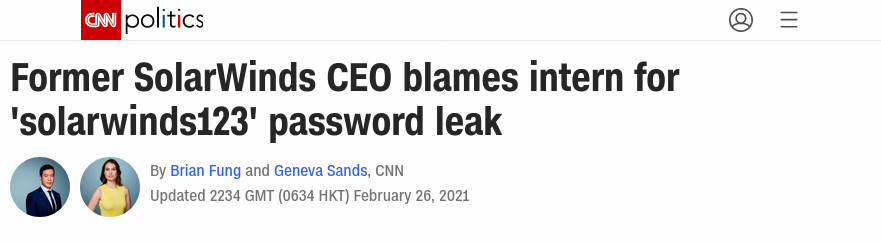

class: center, middle # How to be a good developer 0.6.0 ## Tomas Tomecek --- # `/who "Tomáš Tomeček"` .left-column[ * Principal Software Engineer @ Red Hat * Product Owner of Packit project * Containers, automation, integration, packaging * I ❤ free & open source software ] .right-column[ <img src="./tomas.jpg" width="320"> ] --- class: center, middle # This is usually an interactive session... ??? * But I don't know how would it work in this virtual environment * Please post questions and comment in chat if possible --- class: center, middle # What does it mean to you to be "a good developer"? --- # What does it mean to you to be "a good developer"? -- * Solving real problems ??? * the glibc issue -- * Making an impact ??? * eRouska * I mostly use these two criteria to prioritize work for our team -- * Thinking how the code I just wrote affects users ??? * Most of your users never see the code you write * Users really care if they need to change something after they update: `json -> toml` -- * ...and my colleagues would say how clear the code is. ??? * Needs to be maintainable or the project just starves * Collaborate effectively * Code reviews -- * Present and share ??? * Present your work and your project * Share your knowledge -- * Work efficiently ??? * Learn how to use tools effciently and be more effective in your job * This is my list --- class: center, middle # Tomas, that was boring, tell us something technical ??? Our work is boring sometimes: meetings, design documents and emails are real. Value time you enjoy. --- # Work efficiently * Master your environment... -- * ... your editor -- * ... and your version control system (git) ??? * Pinnacle of open source software development. * Distributed VCS. * [Pro Git](https://git-scm.com/book/en/v2) --- class: center # Is your action secure? <div class="middle">  </div> <div class="footer small middle"> <a href="https://edition.cnn.com/2021/02/26/politics/solarwinds123-password-intern/index.html">https://edition.cnn.com/2021/02/26/politics/solarwinds123-password-intern/index.html</a> </div> ??? Take security classes while still in school. --- # Present and share * Can you speak English? * Did you ever presented about your project? * Blog, stackoverflow.com, github.com ??? --- # `</body>` * Working in tech means to learn continuously. * ...and face challanges. --- # Futurama quote **Steve Castle**: Listen, big guy, now that you're my protégé, it's time I cut you in on the secret to success. Any guesses? **Fry**: Uh, work really, really hard? **Steve Castle**: No. **Fry**: Oh, thank God! **Steve Castle**: It's all about appearances. That's why it's time to update our company's stodgy image and give it the sleek, dazzling veneer of the 1980's! --- class: middle, center **Tomas**: I'm sorry but you need to work really, really hard. --- class: middle # The end * <span class="fa fa-github-square"></span> [github.com/TomasTomecek/speaks](https://github.com/TomasTomecek/speaks) * <span class="fa fa-twitter-square"></span> [@TomasTomec](https://twitter.com/TomasTomec) * <span class="fa fa-globe"></span> [blog.tomecek.net](https://blog.tomecek.net/)